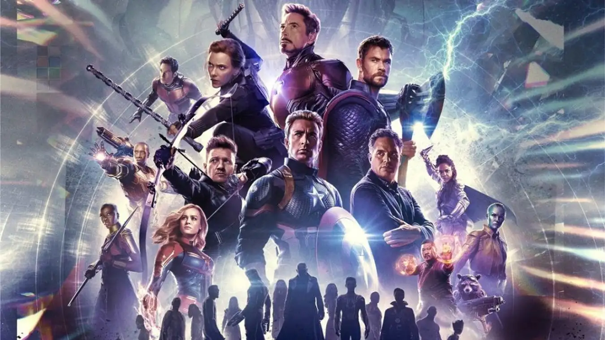
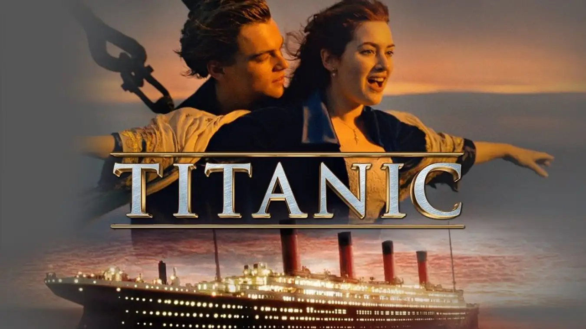

1. Avatar (2009)
Doanh thu toàn cầu: $2,847,246,203
Avatar là bộ phim chiếu rạp có doanh thu cao nhất thời đại tính đến hiện nay dù ra mắt đã hơn một thập kỷ. Avatar là phim đầu tiên sử dụng công nghệ 3D và đánh dấu bước đột phá trong lịch sử nền điện ảnh thế giới. Phim xoay quanh cuộc xâm lược hành tinh Pandora của người trái đất vào năm 2154 và cuộc chiến với chủng tộc bản địa tại hành tinh này.

Avatar với nhân vật chính là cựu sĩ quan thuỷ quân lục chiến bị liệt nửa người - Jake Sully. Anh được chọn để tham gia vào chương trình nuôi cấy gen với người ngoài hành tinh Na’vi sau khi người anh của mình hy sinh trước đó. Jake có nhiệm vụ tìm hiểu văn hoá, cách sinh hoạt của chủng tộc bản địa trên Pandora để phục vụ cho việc xâm lược. Thế nhưng Jake lại quyết định bảo vệ Pandora và chiến đấu với loài người.
2. Avengers: Endgame (2019)
Doanh thu toàn cầu: $2.797.501.328
Phim chiếu rạp có doanh thu cao thứ 2 thuộc về cái tên Avenger: Endgame từ Marvel Studio. Thuộc thể loại siêu anh hùng, phim tập hợp toàn bộ các anh hùng trong cuộc chiến chống lại siêu phản diện Thanos. Trong phần trước sau khi cú búng tay của Thanos thành công, một nửa nhân loại đã tan biến và biệt đội báo thù đã chịu thiệt hại nặng nề.
Tại Endgame, các siêu anh hùng lại tập hợp một lần nữa với kế hoạch đi đến quá khứ để thu thập các viên đá vô cực nhằm đảo ngược cú búng tay. Thế nhưng mọi việc có vẻ không đơn giản như thế khi Thanos tại thời gian này đã phát hiện ra kế hoạch của họ, dẫn đến một trận chiến khủng khiếp giữa hai phe thiện ác.
3. Titanic (1997)
Doanh thu toàn cầu: $2.187.425.379
Titanic có lẽ là cái tên mà nhiều khán giả đã quá quen thuộc, một tác phẩm huyền nói về một chuyện tình lịch sử trên con tàu Titanic. Chuyện phim kể về cô tiểu thư giàu có Rose đem lòng yêu anh chàng hoạ sĩ nghèo Jack, họ vô tình gặp nhau trên con tàu Titanic và tạo nên câu chuyện tình đẹp nhất nền điện ảnh thế giới.
Titanic đạt đến 11 tượng vàng Oscar cho hạng mục Đạo diễn xuất sắc nhất và phim hay nhất. Là phim đạt mốc doanh thu 1 tỷ USD đầu tiên, sau khi phát hành định dạng 3D vào năm 2012 đã giúp Titanic cán mốc 2 tỷ USD toàn cầu và đứng thứ hai sau Avatar.
4. Star Wars: The Force Awakens (2015)
Doanh thu toàn cầu: $2.068.223.624
Star Wars: The Force Awakens là thuộc series phim chiếu rạp Star Wars (Chiến tranh giữa các vì sao). Phim ra mắt từ năm 2015 và mang đến nguồn doanh thu cực khủng và chiếm vị trí thứ 4 trong bảng xếp hạng hiện tại. Nội dung phim kể về hành trình phiêu lưu của chàng trai Luke Skywars, người bạn Han Solo và công chúa Leia giữa các vì sao. Phim gây bất ngờ khi chỉ mất có 12 ngày để mang về 1 tỷ USD doanh thu cho mình.